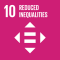

BE14: Employee Concerns
Employee concerns are actively solicited, impartially judged and transparently addressed
1. Ambition
A Future-Fit Business takes steps to minimize employee concerns, and implements internal controls to identify and deal fairly with any issues that do arise.
1.1 What this goal means
Companies depend on the commitment and motivation of their employees, so it is good business sense to engage them as much as possible. The intent of this goal is to set a minimum threshold of acceptable performance in this regard, which means ensuring that the company does nothing to undermine its employees’ wellbeing.
No company can be completely free of employee concerns, but it must take all steps possible to minimize concerns, and to deal effectively and appropriately with any concerns that arise.
To be Future-Fit, a company must put in place appropriate mechanisms to identify and manage employee concerns, so that potentially serious issues and legitimate grievances do not go unaddressed.
1.2 Why this goal is needed
As with all Future-Fit Break-Even Goals, a company must reach this goal to ensure that it is doing nothing to undermine society’s progress toward an environmentally restorative, socially just, and economically inclusive future. To find out more about how these goals were derived based on 30+ years of systems science, see the Methodology Guide.
These statistics help to illustrate why it is critical for all companies to reach this goal:
- Despite legal protections in many developed countries, whistle-blowers still often experience negative outcomes and are deterred from speaking out. A five-year study by Public Concern at Work found that more than 80% of employees who had raised concerns over workplace practices were dismissed, victimised or resigned. [117]
- Effective concerns mechanisms help to uncover illegal activity. In 2016, occupational fraud caused $6.3bn of company losses worldwide, with an average loss of $2.7 million per case. Companies with a dedicated reporting hotline in place were first alerted to instances of fraud by employees in 47% of cases, but only 28% of cases were reported by employees in companies with no such hotline. [118]
1.3 How this goal contributes to the SDGs
The UN Sustainable Development Goals (SDGs) are a collective response to the world’s greatest systemic challenges, so they are naturally interconnected. Any given action may impact some SDGs directly, and others via knock-on effects. A Future-Fit Business can be sure that it is helping – and in no way hindering – progress towards the SDGs.
Companies may contribute to several SDGs by ensuring employee concerns are actively solicited, impartially judged and transparently addressed, and actively encouraging their suppliers to do the same. But the most direct links with respect to this goal are:
| Link to this Break-Even Goal | |
|---|---|
| Support efforts to ensure women’s full and effective participation and equal opportunities for leadership at all levels of decision-making. | |
 |
Support efforts to empower and promote the social, economic and political inclusion of all, and efforts to ensure equal opportunity and reduce inequalities of outcome by promoting appropriate policies and action. |
| Support efforts to develop effective, accountable and transparent institutions, and efforts to ensure responsive, inclusive, participatory and representative decision-making at all levels. |
2. Action
2.1 Getting started
Background information
This goal addresses issues that aren’t covered in the other employee goals, and in addition ensures that employees have the ability to notify management whenever the company’s performance against those other goals falls short.
In order to actively solicit, impartially judge and transparently address employee concerns, all employees must have access to a well-functioning mechanism through which to raise general concerns, and to call attention to potentially damaging or unethical practices.
Questions to ask
These questions should help you identify what information to gather.
Does the company have a formal mechanism in place to solicit and manage employee feedback?
- If there are only informal practices in place, could personal judgement or inconsistency in timing and treatment of reactions impair the company’s ability to respond to and benefit from employee input?
- Is the company aware how confident its employees are that their concerns will be dealt with effectively and (where appropriate) confidentially?
Does the company foster a culture of open communication?
- Do incentive or recognition structures exist which encourage employees to speak up?
- Is it possible for employees to provide input anonymously?
- Even if a functioning concerns mechanism is in place, could the company’s culture or past experiences make employees reluctant to use it?
How to prioritize
These questions should help you identify and prioritize actions for improvement.
In which areas could the company could have the biggest impact?
- Which divisions or facilities have the most employees? Improvements here could impact the greatest number of people.
- Where are employees most likely to notice opportunities or risks that management is not aware of? For instance, are there locations geographically remote from headquarters, or operations occurring at off-site workplaces or in remote areas?
In which areas could the company make progress most easily?
- What types of concerns mechanism and communication tools would be accessible to the largest numbers of workers?
- Does the company have an employee concerns mechanism in place within parts of its operations, or at specific subsidiaries? Could it be adopted more widely?
Could the company find ways to exceed the requirements of this goal?
- Beyond what is required to reach this goal, is the company able to do anything to ensure that people have the capacity and opportunity to lead fulfilling lives?131 Any such activity can speed up society’s progress to future-fitness. For further details see the Positive Pursuit Guide.
The next section describes the criteria needed to tell whether a specific action will result in progress toward future-fitness.
2.2 Pursuing future-fitness
Introduction
The two steps to be addressed in order to assess progress towards this goal are to identify all of the company’s employees during the period, and then to ensure that those employees all have access to an appropriate concerns mechanism.
Guidance on determining which workers are in scope as ‘employees’
There are many different types of working relationships between a company and those contributing labour to its activities. It is important to distinguish who qualifies as a direct employee, and who is part of an outside organization providing services to the company. See the Implementation Guide for details on determining who is an employee.
The next section describes the fitness criteria needed to tell whether a specific action will result in progress toward future-fitness.
Fitness criteria
Drawing on the guidance embodied in the UN Principles on Business and Human Rights, CSR Europe, and the CAO, the following criteria are deemed sufficient for future‑fitness:
Ensure legitimacy
- Employees or established groups that represent their interests are actively involved in the design of any new or updated concerns mechanism.
- The concerns mechanism is designed to accommodate the reporting of all conceivable issues, irrespective of their category or type.
Ensure positive outcomes
- All concerns are resolved in a timely manner and without negatively impacting progress towards other Break-Even goals.
Ensure accessibility
- Information on the existence and use of a concerns mechanism (beyond direct reporting lines, such as speaking to the employee’s manager) is actively communicated to all employees.
- The concerns mechanism is designed to allow for employee confidentiality and to protect employees from reprisals.
Reduce uncertainty
- At both corporate level and on a per-site basis, a team or individual is assigned responsibility for facilitating development and implementation of the concerns mechanism.
Ensure fairness
- Where necessary (e.g. if a complaint is filed against a manager who might normally be involved in arbitration) employees are provided with access to neutral/independent advice and expertise.
Ensure transparency
- Employees who use the concerns mechanism are fully informed throughout the process.
Engage actively
- Employees or established groups that represent their interests are proactively consulted on any changes to any existing concerns mechanism, and ahead of any major change in company activity that could impact employee wellbeing.
Improve continuously
- Anyone who uses the concerns mechanism is asked for feedback on its improvement.
- The performance of the concerns mechanism is monitored and regularly assessed.
- The assessment of the concerns mechanism must include proactively soliciting of feedback from employees at regular intervals.132
- When areas for improvement are identified, the company takes steps to implement those changes.
3. Assessment
3.1 Progress indicators
The role of Future-Fit progress indicators is to reflect how far a company is on its journey toward reaching a specific goal. Progress indicators are expressed as simple percentages.
A company should always seek to assess its future-fitness across the full extent of its activities. In some circumstances this may not be possible. In such cases see the section Assessing and reporting with incomplete data in the Implementation Guide.
Assessing progress
This goal has one progress indicator. To calculate it the following steps are required:
- Assess fitness for each employee against the fitness criteria.
- Calculate company-wide progress across all employees.
Assessing fitness for each employee
Note that although fitness is measured on a per-employee basis, the assessment can be done by group (e.g. by location, job function, etc.), provided that all employees in a group have equal access to the same concerns mechanism.
The employee concerns mechanism is scored using the eight fitness criteria categories (legitimacy, positive outcomes, accessibility, reducing uncertainty, fairness, transparency, engage actively, improve continuously), as follows:
- 0% fit: no formal concerns mechanism is in place for an employee or group of employees, or no assessment of the mechanism against the criteria has been performed, _or_the concerns mechanism does not live up to the two fitness criteria categories Ensure legitimacy and Ensure positive outcomes.
Employees covered by a concerns mechanism are scored as follows:
- 30% fit: Ensure legitimacy and Ensure positive outcomes criteria are satisfied.
- 45% fit: One additional criteria category is satisfied.
- 60% fit: Two additional criteria categories are satisfied.
- 70% fit: Three additional criteria categories are satisfied.
- 80% fit: Four additional criteria categories are satisfied.
- 90% fit: Five additional criteria categories are satisfied.
- 100% fit: All criteria categories are satisfied.
Calculating company progress
Overall progress is calculated as follows:
- Identify the total number of employees in the company during the reporting period.133
- Calculate progress as the weighted average fitness of the company’s concerns mechanism across all employees.
This can be expressed mathematically as:
\[F=\frac{0(E_{0\%})+0.3(E_{30\%})...+0.9(E_{90\%})+1(E_{100\%})}{E_T}\]
Where:
| \[F\] | Is the progress toward future-fitness, expressed as a percentage. |
| \[E_{x\%}\] | Is the number of employees in the company for which the fitness score is x%, based on which of the eight fitness criteria categories are being met.134 |
| \[E_T\] | Is the total number of employees in the company during the reporting period. |
For an example of how this progress indicator can be calculated, see here.
3.2 Context indicators
The role of the context indicators is to provide stakeholders with the additional information needed to interpret the full extent of a company’s progress.
Total number of employees
In addition to the proportion of employees that have access to an appropriate concerns mechanism, the total number of employees that worked for the company during the reporting period must be reported.
Note that for this indicator it is not appropriate to use the average number of employees (e.g. equating two employees working 20 hours per week each to one full-time employee, or three workers employed for four months each as one full time job) as such methods would risk obfuscating the impacts on one or more of the individuals concerned.
For an example of how context indicators can be reported, see here.
4. Assurance
4.1 What assurance is for and why it matters
Any company pursuing future-fitness will instil more confidence among its key stakeholders (from its CEO and CFO to external investors) if it can demonstrate the quality of its Future-Fit data, and the robustness of the controls which underpin it.
This is particularly important if a company wishes to report publicly on its progress toward future-fitness, as some companies may require independent assurance before public disclosure. By having effective, well-documented controls in place, a company can help independent assurers to quickly understand how the business functions, aiding their ability to provide assurance and/or recommend improvements.
4.2 Recommendations for this goal
The following points highlight areas for attention with regard to this specific goal. Each company and reporting period is unique, so assurance engagements always vary: in any given situation, assurers may seek to evaluate different controls and documented evidence. Users should therefore see these recommendations as an illustrative list of what may be requested, rather than an exhaustive list of what will be required.
- Document the methods used to determine the number of employees that the company had during the reporting period, and how these employees were categorized into groups for the purposes of the evaluation. Assurers may use this information to assess the risk that employees were inadvertently omitted from the assessment.135
- Create documentation, such as meeting notes and attendee lists, to demonstrate the involvement of employees and/or their representatives when creating or modifying concern mechanisms. Assurers may evaluate this documentation to verify employees’ involvement in these processes.
- Record the steps taken to communicate the existence of the concern mechanism to employees, and directions for its use. Communication to employees includes any ways it has been integrated into recruitment, training, or performance evaluation processes or materials. This can help assurers to understand and evaluate the company’s strategy for ensuring that employees are aware of the mechanism.
- Document the method used to ensure that employees submitting concerns via the mechanisms provided by the company remain anonymous when appropriate. Assurers may use this to verify that the mechanism is accessible to employees without fear of reprisal.
- Document the conditions in which employees are given access to independent advice and expertise when bringing a concern to the company. Assurers may evaluate the processes to validate that the company is meeting this criterion.
- Document the process followed to ensure controls are working as intended. Assurers may check this process to determine whether the company is able to identify and address any problems with the concern-reporting system within a reasonable timeframe.
For a more general explanation of how to design and document internal controls, see the section Pursuing future-fitness in a systematic way in the Implementation Guide.
5. Additional information
5.1 Example
ACME Inc. sells lemonade products. Its operations consist of two sites: a bottling plant and an office space. The company has a total of 250 employees: 50 working in the office and 200 at the bottling plant. The company has a concerns mechanism at both sites.
The concerns mechanism at the office site lives up to only five of eight criteria categories: there is currently no way to access an independent arbiter, the company does not communicate significant business changes to employee groups beforehand, and employees that submit complaints do not receive any updates during the process. The company therefore scores its office concerns mechanism as 70% fit.
The concerns mechanism at the plant has the same three shortcomings as the office mechanism, but in addition ACME has not provided the means for plant staff to submit concerns anonymously. The company therefore scores its bottling plant concerns mechanism as 60% fit.
The company calculates its progress as:
\[F=\frac{0(E_{0\%})+0.3(E_{30\%})...+1(E_{100\%})}{E_T}=\frac{0.7(50)+0.6(200)}{250}=62\%\]
Context indicator
Total number of employees during the reporting period = 250
5.2 Useful links
The UN Guiding Principles on Business and Human Rights
The UN’s Human Rights Council endorsed the guiding principles in 2011, which apply both to states and business enterprises.
CSR Europe
CSR Europe is a leading European business network for corporate social responsibility. In 2013 it published the report Assessing the effectiveness of company grievance mechanisms, which translated the UN’s guiding principles into a recommended set of company actions.
The Office of the Compliance Advisor / Ombudsman
CAO is the independent recourse mechanism for the International Finance Corporation (IFC) and Multilateral Investment Guarantee Agency (MIGA). It has released A Guide to Designing and Implementing Grievance Mechanisms for Development Projects.
Bibliography
This is one of the eight Properties of a Future-Fit Society – for more details see the Methodology Guide.↩︎
Due to the nature of concerns mechanisms, if employees are not aware of one or if it is not functioning as intended, management is unlikely to be made aware of this fact without proactively checking. It is suggested that reviews are conducted on at least an annual basis.↩︎
Note that for this indicator it is not appropriate to use the average number of employees (e.g. equating two employees working 20 hours per week each to one full-time employee, or three workers employed for four months each as one full-time job) as it risks obfuscating the impact on one or more of the individuals.↩︎
For example, would be the number of employees for whom a concerns mechanism is in place which meets five of the eight fitness criteria categories, including Ensure legitimacy and Ensure positive outcomes.↩︎
This information is relevant for all employee-related Break-Even Goals, but the method may have to be adjusted for the purposes of this goal. For the reason why see the Context indicator section.↩︎